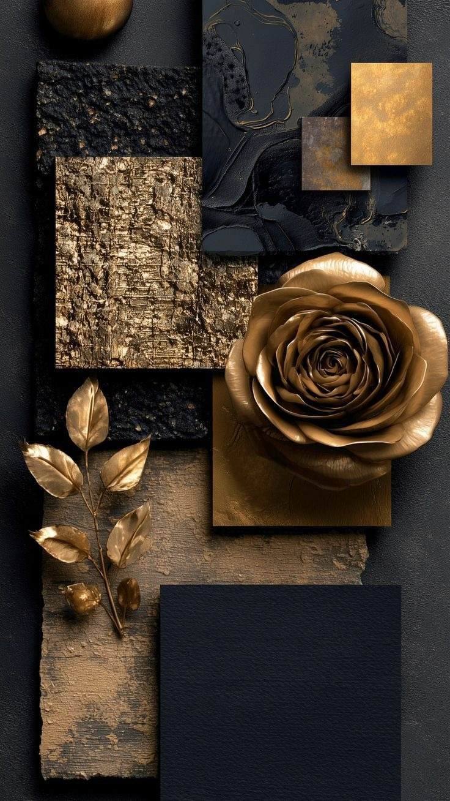

Make the feeling tangible.
Professional interior-design boards connect atmosphere to decisions: palette, materials, finishes, furniture character, lighting, textiles and spatial cues.

Fifteen concepts.
These boards are structured as interior-design concept studies rather than Pinterest collages. Each combines atmosphere with a palette and material direction so a client can understand how a space could be resolved before detailed specification. Click any board to expand it.
From mood to material.
A useful interior mood board should help a client approve a direction and help the design team keep later choices coherent. In professional practice, the visual direction can evolve into a more exact sample/material board as products and finishes are confirmed.
Palette
Primary neutrals, supporting tones and considered accents establish the visual hierarchy.
Materials & finishes
Stone, timber, metal, paint, fabric, panels and surface treatments give the concept physical credibility.
Furniture & lighting
Silhouette, scale, softness and light quality show how the atmosphere will be inhabited.
Spatial cue
Room imagery, layout references and architectural details connect the board to the actual space.